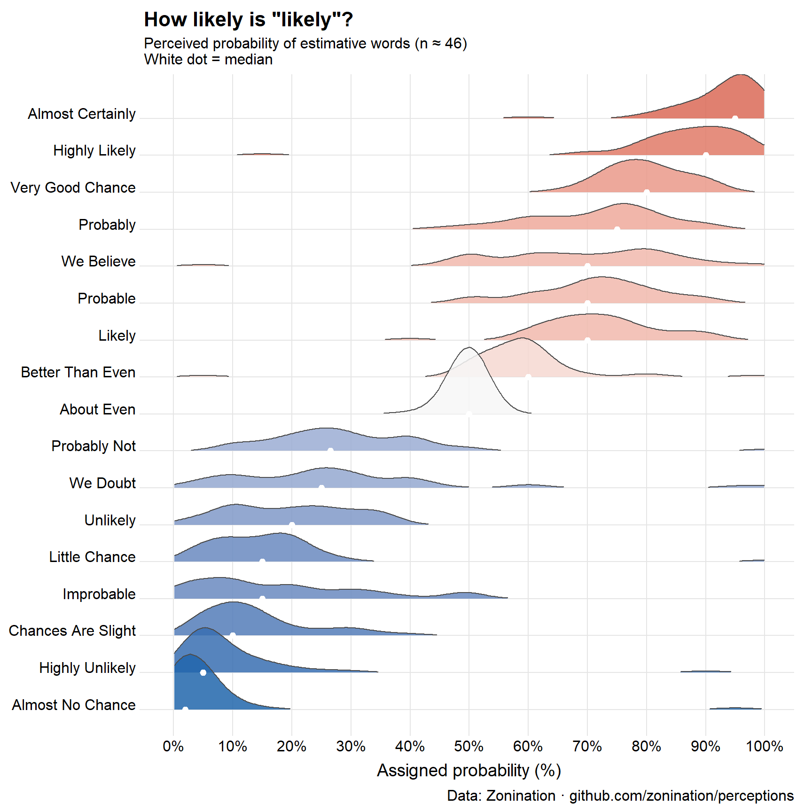

Temperature words are doing quantitative work while pretending to be qualitative. Beach Science would like to fix this.
Author
Michael Friendly
Published
June 15, 2026
Standing at the water’s edge this morning, I described the Mediterranean to my companion as brisk. She called it refreshing. A man walking past, apparently from somewhere much colder, called it lovely and warm. We were all describing the same water at the same moment.
This is not a failure of communication. It is a research question.
The Probability Analogy
In the 1960s, a CIA analyst named Sherman Kent noticed that intelligence reports were full of words like probable, unlikely, almost certain — and that nobody agreed on what they meant. He asked a group of NATO officers to assign numerical probabilities to phrases like “serious possibility” and “little chance.” The results were alarming. “Probable” mapped to anywhere from 55% to 90% depending on who you asked. Words that felt precise were carrying enormous hidden uncertainty.
The same problem almost certainly applies to temperature language. When your weather app says warm, when a friend describes the sea as chilly, when a wine menu mentions serving at room temperature — these words are doing quantitative work while pretending to be qualitative. Nobody has agreed on the numbers.
Beach Science would like to fix this.
ggplot(prob_long, aes(x = probability, y = term, fill = med)) +geom_density_ridges(scale =1.8, rel_min_height =0.01,colour ="grey30", linewidth =0.4, alpha =0.85) +geom_point(data = term_summary,aes(x = med, y = term),colour ="white", size =1.8, inherit.aes =FALSE) +scale_fill_gradient2(low ="#2166ac", mid ="#f7f7f7", high ="#d6604d",midpoint =50, name ="Median\n(%)") +scale_x_continuous(breaks =seq(0, 100, 10),labels =function(x) paste0(x, "%"),limits =c(0, 100)) +labs(title ='How likely is "likely"?',subtitle ="Perceived probability of estimative words (n ≈ 46)\nWhite dot = median",x ="Assigned probability (%)", y =NULL,caption ="Data: Zonination · github.com/zonination/perceptions") +theme_ridges(grid =TRUE, center_axis_labels =TRUE) +theme(plot.title =element_text(face ="bold", size =16),legend.position ="none")

Figure 1: Perceived probability of estimative words (n ≈ 46). White dot = median. Data: Zonination.
A Lexicon of Warmth
Here, roughly ordered from coldest to hottest, are the terms worth studying:
“Brisk” — means cold, said cheerfully, to imply you don’t mind.
“Refreshing” — means cold, said approvingly, usually while entering water you were dreading.
“Perfect beach weather” — means something different to everyone who says it.
“Room temperature” — nominally 20°C, actually whatever the room happens to be.
“A bit nippy” — British for genuinely cold, deployed as understatement.
The last category is the most interesting. These terms carry emotional valence as well as thermal content — they tell you not just how warm something is, but how the speaker feels about it. Separating those two things is itself a research problem.
What to Measure?
A proper BS study would present subjects with this list of terms — perhaps 25–30 in total — and ask them to assign a temperature in degrees Celsius to each one. Not a range. A number. The discomfort of that precision is the point.
From a reasonable sample you’d get, for each term:
A mean “intended temperature”
A standard deviation (how much people disagree)
Possibly a bimodal distribution for the slippery ones — refreshing might split between people who love cold water and people who merely tolerate it
You’d also want to ask about context. “Warm” for bathwater, air temperature, and sea temperature are probably calibrated quite differently. “Lukewarm” for coffee is not the same as “lukewarm” for political support — though it would be amusing to find out if they’re numerically similar.
Individual Differences
The Kent study found systematic differences by nationality and professional background. You’d expect the same here, and more:
Geographic origin — someone from Helsinki and someone from Lagos will not agree on mild
Age — thermoregulation changes with age; older people tend to run cooler
Sex — well documented differences in thermal comfort, still not fully explained
Recent acclimatisation — what felt cold on day one of a beach holiday feels brisk by day five
This suggests the study needs demographic covariates, and that the interesting finding might not be the mean temperatures but the variance — which terms are universally agreed upon, and which are doing completely different work for different people.
My prediction: freezing and scorching will have the tightest agreement. Mild, comfortable, and fresh will be all over the place.
How to Study It
An online survey would work fine — present the terms in randomised order, ask for a numeric temperature response, collect demographics. A hundred respondents would give you something interesting; a thousand would give you something publishable.
The analysis is straightforward: descriptive statistics for each term, then a plot showing the distribution of responses — a ridgeline plot or violin plot would show both the central tendency and the spread beautifully. Terms ordered by median temperature on the y-axis; spread showing disagreement. You’d see immediately which words are doing precise work and which are vessels into which people pour their own thermal experience.
A follow-up study worth doing: present the same terms with context (the sea was refreshing, the coffee was lukewarm, a mild day for January) and see how much context shifts the numbers. My guess: substantially.
Postscript: I asked my companion what temperature she’d assign to “warm.” She said 24°C. I said 19°C. We have been on this beach for four days. We are, apparently, still not calibrated to the same scale.